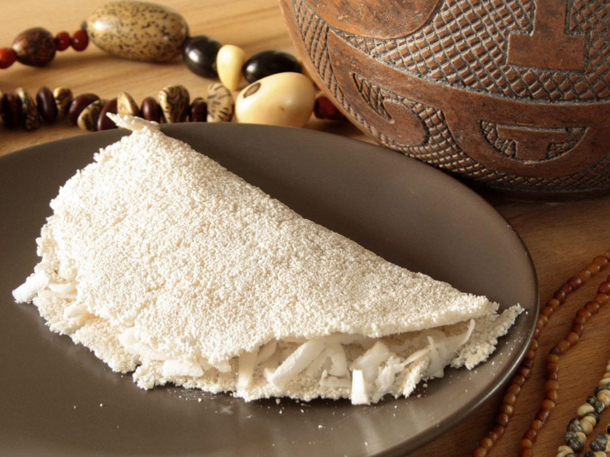

Receita de Tapioca

A tapioca é um prato tradicional da culinária brasileira, que tem suas raízes no nordeste do país. Feita a partir da fécula extraída da mandioca, ela é uma opção deliciosa e versátil, perfeita para o café da manhã, lanche ou até mesmo para uma refeição principal. Sua textura macia e levemente crocante quando preparada corretamente, faz dela uma favorita entre os amantes de comida simples e saborosa. Além disso, é uma excelente alternativa sem glúten, tornando-se uma escolha ideal para pessoas com restrições alimentares. Nesta receita, você vai aprender a preparar uma tapioca deliciosa e recheada com ingredientes que combinam perfeitamente para um sabor único e inesquecível. Vamos lá?
Ingredientes
- ½ xícara (chá) de polvilho doce
- 2 colheres (sopa) de água filtrada
- ¼ de xícara (chá) de queijo meia cura
Modo de Preparo
- Numa tigela, coloque o polvilho e regue com a água, de colher em colher. Vá misturando com as pontas dos dedos para hidratar de maneira uniforme — a textura final deve ser de uma farinha úmida, mas com grãos soltos, que modela ao ser apertada, caso necessário junte um pouquinho mais de água.
- Leve uma frigideira pequena antiaderente ao fogo médio. Para saber se está quente o suficiente, salpique um pouco da farinha hidratada — ela deve pular depois de alguns segundos.
- Baixe o fogo e peneire a farinha de tapioca sobre a frigideira, formando uma camada uniforme – se quiser, espalhe a farinha com as costas de uma colher, mas sem compactar. Deixe a goma firmar por 30 segundos. Polvilhe ¼ de xícara (chá) de queijo meia cura ralado sobre a tapioca, dobre e deixe na frigideira por 1 minuto e meio de cada lado, até o queijo derreter.
Agora que você já conhece os passos para preparar essa deliciosa tapioca, é hora de se aventurar na cozinha e experimentar essa maravilha! Com um sabor leve e recheios versáteis, ela com certeza vai se tornar uma das suas opções favoritas. Se você ficou com alguma dúvida sobre o preparo ou quer ver o passo a passo de forma mais detalhada, não deixe de conferir o nosso vídeo explicativo. Nele, mostramos todos os truques e dicas para garantir que a sua tapioca saia perfeita. Clique aqui para assistir ao vídeo e arrasar na sua receita!